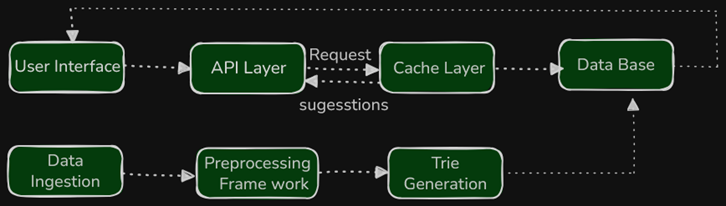

Features
- Real-time suggestions as the user types.
- Return 5–10 suggestions per prefix.
- Suggestions based on frequency and search history.
- Response time must be less than 100 milliseconds.
API Endpoints
GET /suggestions?prefix=<prefix>
Example for the word "kind":
GET /suggestions?prefix=kGET /suggestions?prefix=kiGET /suggestions?prefix=kinGET /suggestions?prefix=kind
Data Structure: Trie
- A Trie data structure is generated periodically.
- Each node stores possible suggestions for a prefix.
- Example: At prefix " ki ", suggestions could be "kind", "kill", "king".
- Frequencies of different search strings are computed, and the Trie is rebuilt accordingly.
Architecture
Offline Process
- Search logs are collected and stored.
- A Spark job processes logs to compute query frequencies and identify popular terms.
- The Trie is generated or updated based on new trends and user history.
- The updated Trie replaces the old version in the database.
Online Process
- User types a prefix
kin -
Client sends
GET /suggestions?prefix=kinto the API. - The API checks the cache for suggestions. If unavailable, it queries the database’s Trie.
- The Trie returns 5–10 suggestions ranked by frequency or personalized metrics.
- The API responds to the client in under 100 milliseconds.